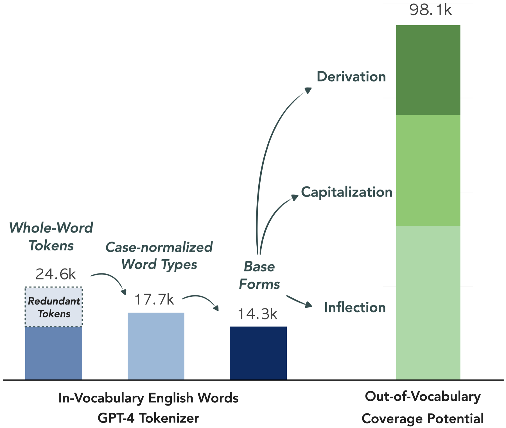
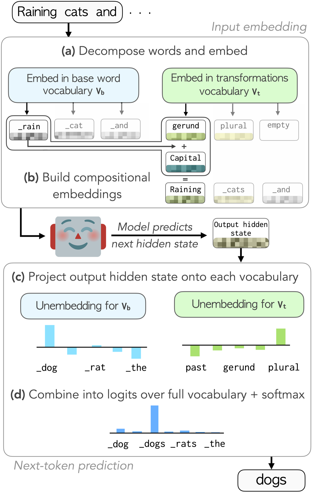
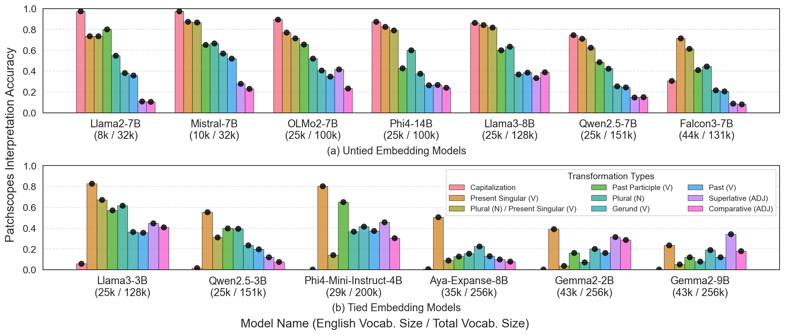

TL;DR: LLMs often encode word-form variation (walk → walked) as linear directions in embedding space. We use this to build compositional vocabularies: instead of a separate token for every surface form, words are composed from a shared base word and transformation vectors (walked = walk + past tense), at both input and output. This frees 10–40% of vocabulary slots for other languages and domains, also covers out-of-vocabulary words, and has minimal impact on downstream performance.
Vocabularies spend many entries on forms of the same word
Tokenizers give common words a separate token for each form: walk, walks, walking, Walk. The GPT-4 tokenizer has 24.6k English whole-word tokens. Ignoring case leaves 17.7k, and grouping inflections and derivations leaves 14.3k base words, 42% fewer. The same base words and transformations can also compose 98k English words that are currently split into several tokens.

Vocab Diet composes words from a base and transformation vectors
Vocab Diet removes surface forms from the embedding tables and represents each as its base plus a small set of transformation vectors. At the input, the word's embedding is the sum of the two. At the output, the model scores a word by adding its base and transformation logits. Each transformation vector starts as the average embedding offset between word pairs that show it, such as walk → walked for past tense.

LLMs understand composed words, for inflections and capitalization
Composed embeddings of inflected and capitalized words are usually read as the intended word, including for many words that are not a single token in the vocabulary. Derivations mostly fail. We feed Llama-3.1-8B composed embeddings and read them out with Patchscopes, counting a word as resolved if it is recognized at the embedding layer or within the first 10 layers. Results are similar for Arabic, German, Russian and Spanish.
Llama-3.1-8B resolves to the intended word within its first 10 layers (Patchscopes).Show all numbers
| In vocabulary | Out of vocabulary | |||||
|---|---|---|---|---|---|---|
| Transformation | embed | detok | N | embed | detok | N |
| Inflection | ||||||
| Plural (N) | 92% | 96% | 0.8k | 30% | 56% | 3.4k |
| Plural (N) & Present Sg. (V) | 87% | 91% | 1.6k | 43% | 75% | 2.1k |
| Present Singular (V) | 90% | 91% | 0.1k | 64% | 82% | 0.3k |
| Past (V) | 71% | 81% | 0.6k | 9% | 29% | 2.9k |
| Past Participle (V) | 64% | 93% | 14 | 14% | 38% | 21 |
| Gerund (V) | 83% | 93% | 0.2k | 17% | 34% | 3.2k |
| Superlative (ADJ) | 71% | 94% | 31 | 5% | 29% | 0.4k |
| Comparative (ADJ) | 40% | 83% | 30 | 3% | 36% | 0.4k |
| Capitalization | 80% | 89% | 6.0k | 72% | 85% | 8.4k |
| Derivation (all) | 31% | 45% | 51 | 0% | 3% | 31.4k |
embed: resolved at the embedding layer; detok: within the first 10 layers; N: number of words evaluated. Per-suffix derivation results are in the paper.
Pretrained LLMs adapt with a small loss
Switching a pretrained model to a compositional vocabulary costs about one point on English benchmarks. The backbone stays frozen: we train only the transformation vectors (under 0.001% additional parameters) and LoRA adapters on the last 8 layers, using about 5M tokens. This removes about 10k surface-form tokens from Llama-3.1-8B and OLMo-2-7B and 7.8k from Qwen2.5-7B. In Arabic, German, Russian and Spanish, it removes 38–45% of whole-word tokens, with drops of up to 4.5 points. Decoding is 0.8% slower.
| Task | Original | Vocab Diet | Δ |
|---|---|---|---|
| Knowledge | |||
| MMLU | 65.2 | 64.9 | −0.3 |
| ARC | 53.6 | 52.5 | −1.1 |
| Reading comprehension | |||
| BoolQ | 83.2 | 83.3 | +0.1 |
| TriviaQA EM | 66.5 | 63.3 | −3.3 |
| SQuAD EM | 22.1 | 20.0 | −2.1 |
| Commonsense | |||
| HellaSwag | 60.6 | 59.5 | −1.1 |
| Winogrande | 78.1 | 78.6 | +0.5 |
| PIQA | 80.3 | 79.1 | −1.2 |
| COPA | 93.0 | 92.0 | −1.0 |
| Average | 66.9 | 65.9 | −1.0 |
Llama-3.1-8B with its original vocabulary and with a compositional vocabulary. Accuracy, except exact match (EM) where marked.Freed slots make tokenization more efficient in other languages
Reallocating the freed slots improves bytes per token by 9.3% on average, at the same vocabulary size. We replace the 10k English surface forms in the Llama-3.1-8B tokenizer with 2.5k new tokens for each of four languages.
Pretraining from scratch removes 42% of vocabulary entries
Compositional vocabularies also work as a design choice for new models. We pretrain 124M-parameter models on 1B tokens, comparing a BPE baseline with an otherwise identical model whose vocabulary is reshaped compositionally; the compositional model predicts the base word first, then its transformations. English bits per byte stay nearly the same. Spanish, where the model may also compose out-of-vocabulary words, gets more efficient tokenization at somewhat higher bits per byte.
| Language | Entries removed | Bits per byte ↓ BPE → Vocab Diet | Bytes per token ↑ BPE → Vocab Diet |
|---|---|---|---|
| English | 41.6% | 1.08 → 1.09 | unchanged |
| Spanish | 41.8% | 1.00 → 1.11 | 4.77 → 4.92 |
Larger vocabularies encode morphology less linearly
Across 13 models, morphology is encoded less linearly as English vocabulary size grows. Models with compact vocabularies (8–10k English words, e.g., Llama-2, Mistral) encode inflections as consistent offsets. Models with large vocabularies (about 40k, e.g., Gemma-2-9B) store inflected forms more as separate words, and weight tying strengthens this trend.

Related
CoBPE (COLM 2026) applies the same input and output parameterization to grammatical markers: articles, prepositions and punctuation attach to a neighboring base token, shortening sequences by 30%.
Citation
@inproceedings{reif-etal-2026-vocab,
title = "Vocab Diet: Reshaping the Vocabulary of {LLM}s via Vector Arithmetic",
author = "Reif, Yuval and
Kaplan, Guy and
Schwartz, Roy",
editor = "Liakata, Maria and
Moreira, Viviane P. and
Zhang, Jiajun and
Jurgens, David",
booktitle = "Findings of the {A}ssociation for {C}omputational {L}inguistics: {ACL} 2026",
month = jul,
year = "2026",
address = "San Diego, California, United States",
publisher = "Association for Computational Linguistics",
url = "https://aclanthology.org/2026.findings-acl.1618/",
doi = "10.18653/v1/2026.findings-acl.1618",
pages = "32334--32352",
ISBN = "979-8-89176-395-1"
}